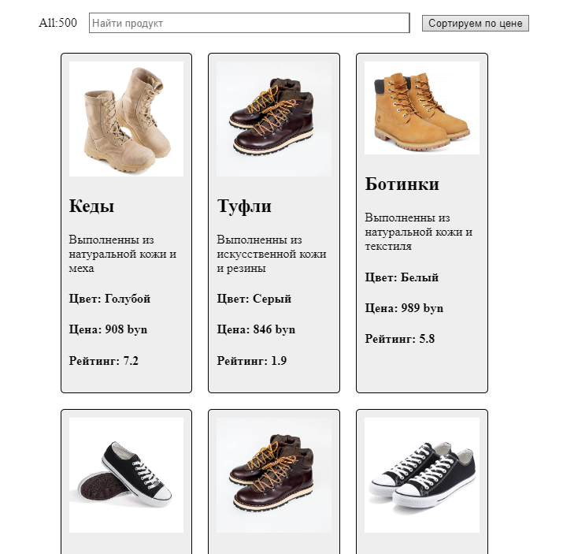

Daria
Zhuravleva
Web developer


A beginner in the IT field specializing in Web development.
I can create effective web applications with average support level.
My greatest strength is the flexibility of thinking and the desire to work
which allows me to constantly optimize the infrastructure and applications.
My works
Todo List
View the code
Todo list allows you to add, delete or search for the necessary tasks. In addition, tasks can be marked as "completed".
Technologies used: JS, React

Sudoku
View the codeA project called "Sudoku". The user enters known numbers and the program offers possible solutions to this Sudoku.
Technologies used: HTML, CSS, JS
Redux & API
View the code
The project is a "multi-page" application, uses an external API and the react-router-dom library. Contains a data state management tool called Redux.
Technologies used: JS, React, CSS
Color Picker
View the code
A color picker with which the user can select the desired color. The user sets the color in the RGB, CMY, HSV palette or selects on the palette and the background of the application is painted in the desired color.
Technologies used: HTML, CSS, JS

Shoe Store
View the code
In this project, a list was generated from a large number of products in a separate file. Products are displayed in a grid. In addition, there is filtering by price and search by name.
Technologies used: JS, React, CSS
Layout with using Figma
View the layoutLayout of a landing page intended for a store of creative goods.
Technologies used: Figma
Site layout
View the codeLayout of a landing which was developed using the FlexBox structure.
It is designed with the expectation of an art goods store.
Technologies used: HTML, CSS
Skills
C++, JavaScript, HTML, CSS, Adobe Photoshop, Figma, SQL
Languages
- English: Upper-Intermediate
- Russian: Native